Performance / Composition Synthesizer · Version 3.0
Section 9 — Program Parameters
(Wave, Hyper-Wave, Editors)
Wave Page
Press the Wave button. On the Wave page, the same three parameters (Wave Name, Wave Class, and Delay) will always appear on the top line of the display, no matter which type of wave is selected:
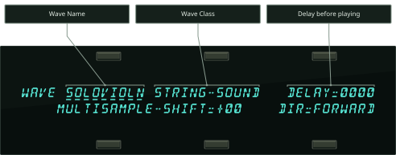
Wave Name
Here you select the actual wave that the voice will play. When this parameter is underlined, the Data Entry Slider will select only among the waves in the current wave class. Pressing the Up/Down Arrow button will allow you to cross over into the next Wave Class.
Wave Class
This shows which of the 16 groups the currently selected wave is in. By underlining this parameter, you can use the Data Entry Slider or the Up/Down Arrow buttons to scroll quickly through the different wave classes to the category you want. Then underline the wave name to select a specific wave from that category.
Whenever the wave class is changed, the first wave in that class is selected, and lower-line parameters are reset to default values for the new wave class.
DELAYRange: 0000 to 5000 msec, KYUP
This parameter determines how long the voice will wait after a key is struck before playing. A delay of up to 5 seconds is possible.
When set to DELAY= KYUP (Key Up), the voice will wait until the key is released before it plays.
Class-Specific Wave Parameters
The parameters shown on the lower line of the display on the Wave page will vary depending on the current wave class. For each wave class, the lower line of the display will contain parameters controlling the features which are specific to that class.
Changing the wave class resets these parameters. However, if you scroll only one step away from the current class and then scroll back, any lower-line settings you had will be restored. Go more than one class from the current one, and any lower-line settings will be lost.
For the first thirteen wave classes, the bottom line of the display shows the following parameters:
MULTISAMPLE-SHIFTRange: -60 to +60
Changes keyboard split points on multi-sampled waves. This has the effect of setting the WaveSamples to ranges you wouldn’t otherwise hear (allowing aliasing in some cases), creating completely different colorations. A setting of MULTISAMPLE-SHIFT=+00 is the default.
DIRRange: FORWARD or REVERSE
Any of the waves in these wave classes can be made to play forward (which is the normal mode) or backward with this parameter. When DIR=REVERSE, the sound will play from the end of the sample to the start point, and will not loop.
Press the Wave button again to get to the next Wave sub-page:
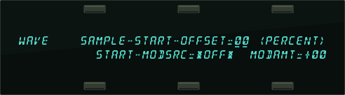
SAMPLE-START-OFFSETRange: 00 to 99
This controls where in the sample the wave will begin playing. When set to 00, the whole wave will play. As the start point is adjusted upwards, it will begin playing further into the wave. You can use this, for example, to skip the attack and play only the loop portion of looped (sustaining) sounds.
START-MODSRCRange: various
Here you choose which of the modulators will control the sample-start of the voice. Any of the 15 modulators can be selected.
MODAMTRange: -99 to +99
Determines how much the selected modulator (above) will affect the wave; i.e. how far away from the start point the sound will move. If MODAMT=+00, the sound will remain static.
Positive amounts will modulate the sound forward (toward the end of the wave); negative modulation amounts will move the sound back toward the beginning.
TRANSWAVE-Specific Wave Parameters
Each Transwave is actually composed of many different single-cycle waveforms, which progress from one timbre to another, occupying adjacent areas of memory. Movement within the sound is created by playing different waveforms in succession; that is, by modulating the wavetable.
The illustration below shows a typical wave of this category, with the index set in the middle range, near 50.

When the wave class is TRANSWAVE, the lower line of the display shows:
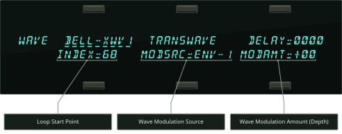
INDEXRange: 00 to 99
The Index parameter controls where within the wavetable the voice-loop will begin playing when the key is struck.
MODSRCRange: 00 to 99
Here you choose which of the 15 modulators will control the movement of the sound. Any of the modulators can be selected.
MODAMTRange: -99 to +99
Determines how much the selected modulator (above) will affect the wave; i.e. how far away from the start point the sound will move. If MODAMT=+00, the sound will remain static.
Positive amounts will modulate the sound forward (toward the end of the wave); negative modulation amounts will move the sound back toward the beginning.
Hyper-Wave™-Specific Wave Parameters
Hyper-Wave architecture allows up to 16 waves to be defined in a list, which can be swept through, or cross-faded for timbre-shifting and Jam-Loops. Hyper-Waves are created by selecting WAVE-LIST with the OPTION parameter found on the Program Control page. Hyper-Waves have their own specific wave parameters.
When the Wave Class is WAVE-LIST, the display shows:
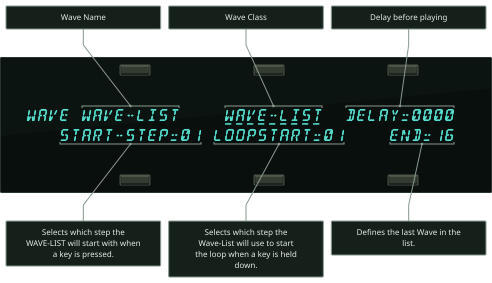
Wave NameRange: Read only
The wave name parameter in a WAVE-LIST is meaningless and is not selectable.
Wave Class
This shows which of the 16 groups the currently selected wave is in. The WAVE-LIST category is only visible when the current sound contains a WAVE-LIST.
DELAYRange: 0000 to 5000 msec, KYUP
Determines how long the voice will wait after a key is struck before playing. A delay of up to 5 seconds is possible.
When set to DELAY=KYUP (Key Up), the voice will wait until the key is released before it plays.
START-STEPRange: 01 to 16
Selects which step number in the Wave-List the voice will start playing when a key is pressed.
LOOPSTARTRange: 01 to 16
Selects the step number in the Wave-List that the voice will loop back to after playing the End Step for its duration.
ENDRange: 01 to 16
Defines the last step in the Wave-List that the voice will play before looping back to play the Loop Start step.
HyperWave Sub-Page
Press the Wave button again to get to the next Hyper-Wave sub-page:
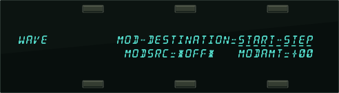
MOD-DESTINATIONRange: *-NONE-*, START-STEP, LOOP-START, END-STEP, TRAVELER, or START+LOOP
- When set to START-STEP, the output level of the START-MODSRC at the time of the note-on will determine which step the Wave-List will begin playing at. A positive MODAMT will cause MODSRC output to increment the START-STEP above the manual level. A negative MODAMT will decrement the START-STEP below the manual level. The manual level is determined by the START-STEP parameter. After the appropriate START-STEP has played for its duration, the Wave-List will play through all of the successive steps, up to the END step, and then will loop back around to play the LOOPSTART Step. If the output of the MODSRC causes the Wave-List to begin playing at a Step that is past the END Step, the appropriate START-STEP will play for its duration, and then the Wave-List will loop back to play the LOOPSTART Step. The Wave-List will continue to loop between the LOOPSTART Step and the END Step, until the voice is turned off.
- When set to either LOOP-START or END-STEP, the LOOPSTART Step or the END Step values will be modulated in a non-real-time manner, similar to when MOD-DESTINATION=START-STEP. With either setting, if the output of the MODSRC causes the END Step to be lower than the LOOPSTART Step, the Wave-List will simply repeat the LOOPSTART Step.
- When set to TRAVELER, Step Duration will be ignored, and MODSRC output will directly control which Step will play, within the boundaries of the START-STEP and the END Step, continuously, in real-time. With MODSRC output at zero, a positive MODAMT will cause the Wave-List to play only the START-STEP. With MODSRC output at full, a positive MODAMT will cause the Wave-List to play only the END Step. A negative MODAMT will have the opposite effects.
- When set to START+LOOP, the MODSRC will modulate the START-STEP, LOOPSTART Step and END Step values all simultaneously, relative to one another, and all in a real-time manner similar to when MOD-DESTINATION=TRAVELER. The integrity of the loop will be maintained as the Step values are modulated. START+LOOP allows you to move a fixed-length window over a definable range of the Wave-List.
MODSRCRange: 00 to 99
Here you choose which of the 15 modulators will control the movement of the wave-list. Any of the modulators can be selected.
MODAMTRange: -15 to +15
This parameter determines the number of steps that the selected Mod Destination will be modulated. Modulation can be either positive or negative.
Drum-Map Specific Wave Parameters
A Drum-Map can use up to 64 waves per program, four waves per key, with separate pitch, volume, panning and voice template parameters for each wave. All of the DRUM-MAP wave page parameters are identical to the first thirteen wave classes, with the exclusion of the MULTISAMPLE-SHIFT parameter.
Also, the DRUM-MAP Wave Class category is only visible when the current program contains a Drum-Map. The wave name parameter in a Drum-Map is meaningless and is not selectable.
Mod Mixer Page
The Mod Mixer is a unique feature which allows you to:
- combine and assign two modulators to a single modulation input
- scale and/or shape the response of one of those modulators according to one of 16 Mod Shaper Curves
Select the voice you want to edit on the Select Voice page, and then press Mod Mixer. The display shows:
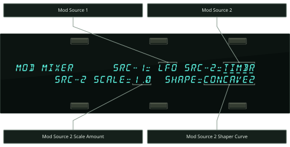
The two parameters on the top line of the display select the two modulators which will be mixed together, SRC-1 and SRC-2. On the lower line of the display are two parameters for shaping the level and response of SRC-2. Internally, the Mixer/Shaper works like this:

There are four parameters which can be selected on the Mod/Mixer page:
SRC-1Range: various
Select any of the 15 available modulators (including the mixer itself) as Mod Source 1. SRC-1 is sent directly to the mod mixer without any level change or response shaping.
SRC-2Range: various
Select one of the 15 available modulators as Mod Source 2. Before being added to SRC-1, SRC-2’s level is adjusted by a scale factor, and then it is passed through the shaper, which allows its response to be customized in a number of interesting ways.
SRC-2 SCALERange: various from 0.1 to 8.0
This is used to adjust the level of SRC-2 relative to SRC-1, or to simply scale the level of the modulator for effect. The modulator’s level is multiplied by the number shown. A value of 1.0 leaves the modulator at its original level. Fractional values (0.1 to 0.9) will reduce the level.
Values greater than 1.0 will amplify the effect of the modulator, in most cases simply causing it to reach full level much sooner.
SHAPERange: various
Here you select which of the 16 tracking curves will be applied to the modulator selected as SRC-2. You can use one of the convex or concave shapes to make the modulator’s effect come in earlier or later than it ordinarily would; you can use one of the quantized shapes to make the modulator’s effect sound “stepped”; or you can use the smoother (which is similar to a “lag processor” in some older analog synths) to smooth the effect of the modulator, to round off the edges. The diagram below shows the 16 Shaper tracking curves:

Some possible applications for shaping the response of SRC-2 are shown on the following page.

Program Control Page
The parameters on this page control aspects of the program that affect all of the individual voices within the program. Press Program Control. The display shows:
TypeRange: various
Allows you to define a sound class for your sound. This setting can be used by third-party editor librarian software for “automatic-sorting” of sounds by type. The available types are:
- ACPIANOS Acoustic pianos, honky-tonk, toy pianos, and piano forte
- ELPIANOS Electric and electronic piano sounds
- ORGANS Pipe organs, electric, and electronic organs
- ALTKEYS Other keyboard sounds such as harpsichord, accordion, and piano layered with other sounds
- SYNLEAD Lead synth sounds
- SYNPAD Sustaining synth pads
- SYNOTHER Other synth sounds: hybrids, fat power-synths, synth bells
- GUITARS Acoustic guitars, clean electric guitars and distortion guitars
- ALTPLUCK Other plucked strings: harps, banjo, dulcimer, sitar, etc.
- SOLOSTRG Plucked and bowed solo strings (violin, viola, cello, bass)
- STRGSECT Plucked and bowed string sections and small ensembles
- SOLOBRAS Solo brass: trumpet, trombone, tuba, French horns
- BRASSECT Brass sections: trumpet, trombone, tuba, French horns
- SOLOSAX Solo saxophones
- SOLOWIND Solo woodwinds/reeds (including harmonica)
- WINDSECT Woodwind/reed/saxophone sections and small ensembles
- VOCALS Vocal sounds: choirs and synth-vox
- ACOUBASS Acoustic basses
- ELECBASS Electric basses
- SYNBASS Synth basses
- DRUMS-E Drum kits that use the ENSONIQ Drum Map
- DRUMS-GM Drum kits that use the General MIDI (GM) Drum Map
- PERCUSSN Percussion kits and solo untuned percussion (e.g. taiko)
- TUNEPERC Tuned percussion: marimba, xylophone, timpani, orchestral hits
- SOUND-FX Realistic (e.g. broken glass) and fantasy (e.g. spacecraft) sound effects
- SPLITS Combination keyboard splits of 2 or more different sounds
- TRANS-WV Distinctly TransWave-type sounds
- HYPER-WV Distinctly Hyper-Wave texture sounds
- GROOVES Rhythm loop groove patterns and pulsed performance sounds
- UTILITY Utility resources: default template sounds, pitch tables, etc.
- OTHER Unclassified miscellaneous sounds (e.g. didgeridoo), and unnatural acoustic layers (e.g. violin scrape layered with a shakuhachi)
- CUSTOM Use this to define your own special purpose sound type: ENSONIQ sounds will never be released with TYPE=CUSTOM.
OPTIONRange: *-NONE-*, PITCHTBL, WAVELIST, or DRUM-MAP
The setting of this parameter indicates whether a Custom Pitch-Table, a Wave-List, or a Drum-Map exists within the sound. These options occupy the portion of a sound program which is usually used by voices 5 and 6, so when an Option is present, you do not have access to those two voices. Whenever the setting of this parameter is changed, you will be prompted with the question “REPLACE VOICES 5+6 WITH PITCH–TABLE, WAVE-LIST, DRUM–MAP, or *EXIT*.” If you choose *EXIT*, then the setting of the parameter is not changed.
If you have a program where OPTION= [PITCHTBL, DRUM-MAP, or WAVELIST], and you want to eliminate the Option (to gain back Voices 5 and 6), press the Down Arrow button when this parameter is selected. The display will show ERASE CURRENT <PITCH-TABLE, DRUM-MAP, or WAVE-LIST>? Selecting *YES* will eliminate the Option, and restore Voices 5 and 6 to their default settings.
If you have a program where OPTION= [PITCHTBL, DRUM-MAP, or WAVELIST], and you want to change the Option (to another option), press the Up Arrow button when this parameter is selected. The display will show the prompt REPLACE VOICES 5+6 WITH PITCH–TABLE, WAVE-LIST, DRUM–MAP, or *EXIT*. At this point, you can select a new Option, or press *EXIT* to return to the previously selected Option assigned to the program.
PRESSRange: OFF, KEY, or CHAN
Allows you to select POLY-KEY, CHANNEL, or NONE (or no pressure responsiveness) for the program. Generally, if a program doesn’t need to respond to pressure, set this to OFF to conserve sequencer memory. This is the default setting that will be installed into a track when the program is selected.
PATCHRange: LIVE or HELD
Selects the default patch select mode for the program. When set to LIVE, it uses the current state of the buttons to select a patch. When set to HELD, it uses the patch set by the first key hit while touching the patch select buttons. For more information about patch selects, refer to Sections 4 and 5. This is the default setting that will be installed into a track when the program is selected.
RESTRIKERange: 00 to 99
This parameter controls the voice Restrike time. When you play a particular note and then restrike it again immediately before the old note has finished sounding, the amount of time it takes for the first strike to fadeout is determined by this parameter. By varying the setting of this parameter, you can control how long sounds overlap when a note is restruck.
For example, if you have a slow string sound, it may sound more natural to use a longer restrike value, which will cause the old note to decay more slowly, rather than end abruptly when the new note starts. Normal values are around 10. The higher the value, the longer the fadeout time.
Along with the PRESS and PATCH parameters, the next page contains copies of Track parameters that are saved in the program. When a program is selected or put on a track, values of these parameters (as saved in the program) are installed in the track as the default initial settings. They can be edited on the track pages without affecting the program default settings, but must be edited on this page in order to be saved with the program. Changes made here will be copied to the current primary track.
Press the Program Control button again to get to the second sub-page:
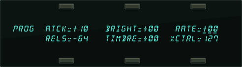
The following parameters are the default settings for the Track parameters that are stored with the Program. For more information about how these parameters function, see Section 5 — Preset/Track Parameters.
ATCKRange: -64 to +63
Editing the ATCK parameter default values will simultaneously edit the Track ATTACK Parameter values on the track that the sound is occupying. This parameter will only function if an asterisk (*) is assigned to any ATTACK parameter (found on the ENV1, 2, and 3 pages) for any Voice in the selected program. This is the default setting that will be installed into a track when the program is selected.
BRIGHTRange: -64 to +63
Editing the BRIGHT parameter default values will simultaneously edit the Track BRIGHTNESS Parameter values on the track that the Program is occupying. This parameter will only function if an asterisk (*) is assigned to any filter cutoff parameter (found on the Filters page) for any Voice in the selected program. This is the default setting that will be installed into a track when the program is selected.
RATERange: -64 to +63
Editing the RATE parameter default values will simultaneously edit the Track RATE Parameter values on the track that the Program is occupying. This parameter will only function if an asterisk (*) is assigned to any LFO RATE parameter (found on the LFO page) for any Voice in the selected program, or if the program contains a voice that plays a Wave-List. This is the default setting that will be installed into a track when the program is selected.
RELSRange: -64 to +63
Editing the RELS parameter default values will simultaneously edit the Track RELEASE Parameter values on the track that the Program is occupying. This parameter will only function if an asterisk (*) is assigned to any RELEASE parameter (found on the ENV1, 2, and 3 pages) for any Voice in the selected program. This is the default setting that will be installed into a track when the program is selected.
TIMBRERange: 000 to 127
Editing the TIMBRE parameter default values will simultaneously edit the Track TIMBRE Parameter values on the track that the Program is occupying. This parameter will only function if TIMBRE is assigned as a modulator within the selected program, or if the V1 through V6 relative volume modulation amounts on the third Program Control sub-page have been assigned to values other than zero. This is the default setting that will be installed into a track when the program is selected.
XCTRLRange: 000 to 127
Editing the XCTRL parameter default values will simultaneously edit the Track XCTRL Parameter values on the track that the Program is occupying. This parameter will only function if XCTRL has been assigned as a modulator within the selected program. This is the default setting that will be installed into a track when the program is selected.
TIMBRE V1 to V6Range: -64 to +63
Press Program Control again to get to the third sub-page:
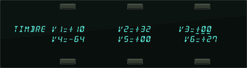
The TIMBRE sub-page controls the relative volume modulation amounts for each Voice, as controlled by Timbre. Note that when OPTIONS is set to PITCH-TABLE, WAVE-LIST, or DRUM-MAP, the V5 and V6 parameters are not displayed.
Pitch-Table Editor Parameters
The following parameters are only available when OPTION=PITCH-TABLE on the first Program Control Page. To access the Pitch-Table Editor parameters:
- Press the Program Control button.
- Select the OPTIONS parameter by pressing its soft button.
- Press the Up Arrow button.
- Select PITCH-TABLE on the bottom of the display by pressing its soft button.
- Press either of the soft buttons beneath EDIT PITCH-TABLE.
The Pitch-Table Editor parameters are:
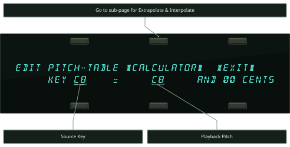
*CALCULATOR*
The Calculator is a utility for accelerating definition of custom pitch tables. This function reveals the Extrapolate/Interpolate sub-page, allowing you to create a pitch-table calculated from a user-defined key range.
KEY Source KeyRange: A0 to C8
For every Source Key on the lower left, you can see and edit the pitch that key should play. The Source Key can be selected by pressing the keys, or using the Data Entry Controls.
Playback PitchRange: A0 to C8
While the Source Key can be thought of as the name or physical location of the key on the keyboard, the Playback Pitch is the actual pitch that will be played when that Source Key is pressed. This can be the same as the Source Key — as shown in the display — or it can be any pitch from A0 to C8.
Fine Tune ParameterRange: 00 to 99 cents
Enables you to fine tune the Playback Pitch, or create micro-tunings and other alternate tunings.
*EXIT*
- Press *EXIT* to return to the first Program Control sub-page, eliminating any edits you may have made on the Pitch-Table Editor sub-page.
Extrapolate/Interpolate
These are mathematical methods by which a few specified Source Key-to-Playback Pitch mappings can be used to set all of the remaining keys in one step. To display the Extrapolate/Interpolate sub-page, press the *CALCULATOR* soft button. The display shows:
KEY-RANGE START/ENDRange: A0 to C8
Defines the area of the keyboard that the TS‑10 will use as a reference by which to make its calculations. The START key is the first of the two key numbers shown, and the END key is the second number shown. By selecting a start and stop key, you can define the key range whose pitch intervals will be duplicated over the entire keyboard. Note that you can also set the start and end keys using the data entry controls, and press the soft button beneath them to toggle back and forth.
EXTRAPOLATE
The EXTRAPOLATE command takes the pitch-table relationships from within a key range and duplicates those relationships outside that range.
After a key-range has been defined, press the EXTRAPOLATE soft button. The display briefly reads PITCH-TABLE *CALCULATOR*, then returns with the newly defined range across the whole keyboard.
INTERPOLATE
INTERPOLATE takes the interval between two notes on the keyboard and divides all the keys in between into equally-spaced fractions of that interval.
After a key-range has been defined, press the INTERPOLATE soft button. The display briefly reads PITCH-TABLE *CALCULATOR*, then returns with the newly defined range across the whole keyboard.
- Press *EXIT* to return to the first Edit Pitch-Table sub-page, eliminating any edits you may have made on the Extrapolate/Interpolate sub-page.
Copy Pitch-Table Parameters
Pressing Copy on the Edit Pitch-Table sub-page will display the Copy page:
The MAKE COPY parameter allows you to make a copy of the complete pitch-table from the currently selected program (or the Compare Buffer) into the Copy Buffer.
The RECALL parameter allows you to recall the complete pitch-table from the Copy Buffer into an edited version of the current program if 1) the current program has a pitch-table installed in it and 2) the Copy buffer contains a pitch-table. If you attempt to recall a Pitch-Table into a program without just previously having copied a pitch-table into the Copy buffer, the copy is not completed and an error message is displayed.
The SYSTEM parameter allows you to install an alternate tuning into the System pitch-table. As an added feature, the System pitch-table itself is user-definable. For instance, if you want to hear what other programs sound like using the custom pitch-table from a program, you can redefine the System pitch-table. Or, if your main tuning is “just intonation,” then it might be convenient for you to use this or some other alternate tuning as your System tuning.
- Press the soft button beneath SYSTEM. The display briefly reads COPY TO SYSTEM PITCH-TABLE, and the custom pitch-table is installed into the TS‑10 Operating System where it is available for use by any program.
- Press System four times to view the System PITCH-TABLE sub-page.
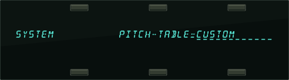
- Note that the SYSTEM PITCH-TABLE parameter has been set to CUSTOM. Now all programs whose voices are set to use the system pitch-table (which is most programs) will use the custom pitch-table.
To return all programs to standard equi-tempered tuning, set the SYSTEM PITCH-TABLE parameter back to NORMAL. Switching back to CUSTOM will restore your custom System pitch-table. You can switch back and forth as often as you wish. You can also try installing other custom pitch-tables in the System, but the System pitch-table can only contain one Custom pitchtable at a time.
Hyper-Waves
Hyper-Waves are a new feature in the TS‑10 that allows you to create custom waves from existing Programs, which can be played stacked and/or in sequence as a long, complex sound. You can assign a sequence of 16 Programs to a single Hyper-Wave, and then play it back as a single wave. You can control the pitch and even the playback direction of each Program. You can control the relative volume of each Program, and you can optionally eliminate the dip in volume that would otherwise occur at the midpoint of the transition between two Programs.Hyper-Waves are defined by Wave-Lists. You control the timing and pitch of the Programs using the Wave-List Editor parameters.
Wave-List Editor Parameters
The following parameters are only available when OPTION=WAVE-LIST on the Program Control Page. To access the Wave-List Editor parameters for a program that does not contain a Wave-List:
- Press the Program Control button.
- Select the OPTIONS parameter by pressing its soft button.
- Press the Up Arrow button.
- Select WAVE-LIST on the bottom of the display by pressing its soft button.
- Press either of the soft buttons beneath EDIT WAVE-LIST.
The Wave-List Editor parameters are:
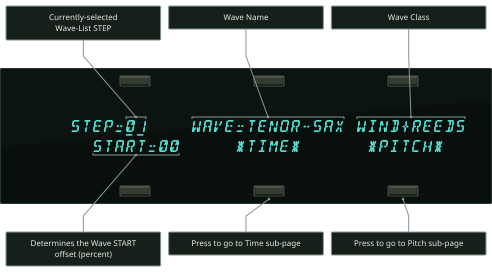
STEPRange: 01 to 16
Defines which of the 16 steps within the Wave-List will be edited.
Wave Name and ClassRange: All ROM waves
Defines which of the internal ROM waves will be used in the currently selected step.
STARTRange: 00 to 99
Determines the starting point within the internal ROM wave. This offset can be used to eliminate the attack portion of a wave to create a smoother transition between waves.
*TIME*
Pressing this soft button will reveal the following screen:
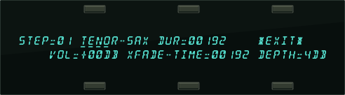
STEPRange: 01 to 16
Selects the wave step to be edited, followed by the Wave Name for the current Step (read-only).
DURRange: 00000 to 60000 (0 to 60 sec)
Selects the total length of time that the selected wave step will play. The duration is defined in 12 millisecond increments.
VOLRange: -50 to +14 dB
Sets the volume for the selected wave step.
XFADE-TIMERange: 00000 to 60000 (0 to 60 sec)
Sets the amount of time that the selected wave step will cross-fade into the following wave step.
The XFADE-TIME adds time to the duration of both the current step and the next step:

DEPTHRange: 0 to 6 dB
Determines how many decibels (dB) below normal volume the two wave steps will meet at the center point of the cross-fade curve.

*EXIT*
Pressing *EXIT* will return you to the Wave-List Editor page.
*PITCH*
Pressing this soft button will reveal the following screen:
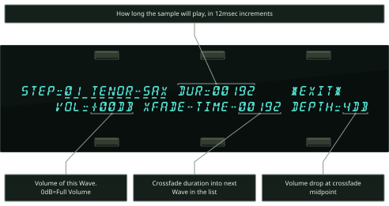
STEPRange: 01 to 16
Selects the wave step to be edited, followed by the Wave Name for the current Step (read-only).
DIRRange: FORWARD or REVERSE
Sets the direction of the wave step playback.
PITCH-KBD-TRKRange: OFF or ON
This determines whether the wave step will use the currently selected System pitch-table (when ON), or play the same pitch for every key (when OFF).
XPOSRange: -36 to +36 (in semitones)
Determines the pitch of the wave step, transposing from the root note of the wave step. This can be used to create preset arpeggios or other patterns.
DETUNERange: -99 to +99 (in cents)
Allows you to fine-tune the wave step's pitch.
*EXIT*
Pressing *EXIT* will return you to the Wave-List Editor page.
Copy Wave-List Parameters
Pressing Copy from the Edit Wave-List sub-page will display the Copy page:
The MAKE COPY command allows you to make a copy of the complete Wave-List from the currently selected program (or the Compare Buffer) into the Copy Buffer.
The RECALL parameter allows you to recall the complete Wave-List from the Copy Buffer into an edited version of the current program if 1) the current program has a Wave-List installed in it and 2) the Copy buffer contains a Wave-List.
If you attempt to recall a Wave-List into a program without just previously having copied a Wave-List into the Copy buffer, the copy is not completed and the following message is displayed:
Drum-Map Editor Parameters
The following parameters are only available when OPTION=DRUM-MAP on the Program Control Page. To access the Drum-Map Editor parameters:
- Press the Program Control button.
- Select the OPTIONS parameter by pressing its soft button.
- Press the Up Arrow button.
- Select DRUM-MAP on the bottom of the display by pressing its soft button.
- Press either of the soft buttons beneath EDIT DRUM-MAP.
The Drum-Map Editor parameters are:
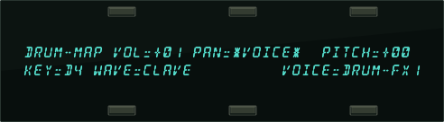
VOLRange: +00 to +15 in incremental steps
Controls the volume level of the sound(s) played by this key relative to the other keys in the drum-map. Setting this parameter to 00 does not necessarily silence the voice(s) playing the wave, and the actual volume minimum depends on the base volume level of the original waveform. For example, if the base volume level of the original waveform is +00, then setting the VOL parameter to 00 will not silence the voice(s) playing the wave. If the base volume level of the original waveform is +00, then setting the VOL parameter to 00 will silence the voice(s) playing the wave.
PANRange: various
Determines where the drum wave voice will be panned in the stereo mix.
The values for the PAN parameter are:
| *VOICE* | Uses Patch VOICE panning |
| L------ | Hard Left |
| -L----- | Medium Left |
| --L---- | Soft Left |
| ---C--- | Center |
| ----R-- | Soft Right |
| -----R- | Medium Right |
| ------R | Hard Right |
PITCHRange: -16 to +15 semitones
The pitch of the selected wave can be raised or lowered in semitone steps. If a greater range or precision of tuning is required, then it is necessary to use pitch modulation on the Pitch Mods page in the destination voice(s).
KEYRange: B1 to B6
This parameter selects a single key for editing and displays all of the current drum-map parameter settings for that key. When this parameter is underlined, you can select the drum-map key to be edited using the data entry controls or by playing the keys on the keyboard. If you play several keys together, the last one played will be selected. There are 61 possible keys in a drum-map, ranging from B1 to D7 (MIDI keys 35 to 95). This range is based on the General MIDI Specification.
WAVERange: (shown below)
This parameter allows you to select the wave to be played by the key from any of the internal ROM waves. Drum-maps will have access to all Waves in the following Wave Classes, for a total of 105 different selectable wave forms:
| • DRUM-SOUND | • PERCUSSION | • SOUND-EFFECT |
| • CYMBALS | • TUNED-PERCUS |
Setting WAVE=*-MUTED-* (Data Entry Slider all the way down) will prevent the current key of the drum-map from playing any voice(s). This could be useful in sequencing, when you want to start recording with a drum track, but don’t want the drum to play on the first beat of the first measure.
VOICE — Voice Parameter TemplateRange: (shown below)
This parameter specifies where the current voice will be sent. For the four Patch Select settings, the destination voices are within the current program and the number of active voices is determined by the mute status of the four voices within the specified patch.
If the VOICE parameter is assigned to a patch which does not have any voices set to wave class DRUM-MAP, then the display will show WAVE=*-VOICE-* and the parameter will not be editable. This indicates that the wave played by the key is controlled by the voice(s) in the patch rather than by the Drum-Map.
Drum-Map Voice Assignments
| for this setting: | the selected key is assigned to: |
|---|---|
| 00 PATCH | Voice will play, along with any other voice(s) assigned to Patch Select 00 |
| 0* PATCH | Voice will play, along with any other voice(s) assigned to Patch Select 0* |
| *0 PATCH | Voice will play, along with any other voice(s) assigned to Patch Select *0 |
| ** PATCH | Voice will play, along with any other voice(s) assigned to Patch Select ** |
| DRUM-FX1 | This basic medium drum/perc. envelope, routed to FX-1, lets most drum sounds through unchanged, but then closes down to create a gate-type effect. Can be used for almost all unlooped drums & percussion. To create a percussion decay out of a looped sound, you should use the LDECAY, MDECAY or SDECAY voices described below. |
| DRUM-FX2 | Same as above, routed to FX-2 |
| DRUM-DRY | Same as above, routed to DRY |
| TIGHT-FX1 | Very quick decay drum/perc. env., routed to FX-1. Good for transients, muted or “choked” sounds. Turns an ambient drum wave into a tight one. |
| TIGHT-FX2 | Same as above, routed to FX-2 |
| TIGHT-DRY | Same as above, routed to DRY |
| NORMAL-FX1 | A normal mode envelope for controlling the duration of the sound (sound plays as long as the key is held, rather than always finishing its decay). Can be used for snare roll, guiro, or other sustaining waves where you would want to vary the duration. |
| NORMAL-FX2 | Same as above, routed to FX-2 |
| NORMAL-DRY | Same as above, routed to DRY |
| TOMTOM-FX1 | Slight downward pitch envelope, volume and filter shapes optimized for toms, routed to FX-1. Can be used for toms, congas, tablas, anything that wants a subtle pitch env. and drum decay. Pressure bends the pitch down further. (For more radical pitch effects, use SYNDRM default below.) |
| TOMTOM-FX2 | Same as above, routed to FX-2 |
| TOMTOM-DRY | Same as above, routed to DRY |
| KEYGRP-FX1 | Trigger mode voice, optimized for hi-hats. This allows group voice cutoff, and can be used for hi-hat key group. |
| KEYGRP-FX2 | Same as above, routed to FX-2 |
| KEYGRP-DRY | Same as above, routed to DRY |
| LDECAY-FX1 | Long cymbal/percussion decay, routed to FX-1. Can be used for crash cymbals, rides, various long-decay percussion sounds. |
| LDECAY-FX2 | Same as above, routed to FX-2 |
| LDECAY-DRY | Same as above, routed to DRY |
| MDECAY-FX1 | Medium cymbal/percussion decay, routed to FX-1. Good used for china cymbal, medium crash, and other medium-decay percussion sounds. |
| MDECAY-FX2 | Same as above, routed to FX-2 |
| MDECAY-DRY | Same as above, routed to DRY |
| SDECAY-FX1 | Short cymbal/percussion decay, routed to FX-1. Good for splash cymbals and other, shorter-decay percussion sounds. |
| SDECAY-FX2 | Same as above, routed to FX-2 |
| SDECAY-DRY | Same as above, routed to DRY |
| SYNDRM-FX1 | Exaggerated pitch and filter envelopes, good for processing synth drums, or creating special effects with regular drums. |
| SYNDRM-FX2 | Same as above, routed to FX-2 |
| SYNDRM-DRY | Same as above, routed to DRY |
| DRUM-AUX | The envelope is the same as DRUM-FX1, but the voice is routed to AUX. This special default routes the basic drum/perc. voice to the AUX outputs. |
Press the Program Control button to exit the Drum-Map Editor.
Copy Drum-Map Parameters
Pressing Copy from the Drum-Map Editor page will display the Copy page:
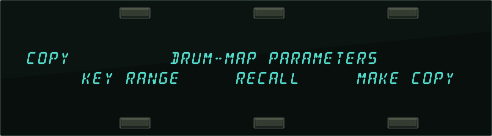
The MAKE COPY option allows you to make a copy of the complete Drum-Map from the currently selected program (or the Compare Buffer) into the Copy Buffer.
The RECALL option allows you to recall the complete Drum-Map from the Copy Buffer into an edited version of the current program if 1) the current program has a Drum-Map installed in it and 2) the Copy buffer contains a Drum-Map.
If you attempt to recall a Drum-Map into a program without just previously having copied a Drum-Map into the Copy Buffer, the copy is not completed and the following message is displayed:
Selecting the KEY RANGE option will display another page which allows you to fill a range of keys with copies of the currently selected Drum-Map key (the key that was shown on the Drum-Map Editor page).
Map Editor page when you pressed Copy).
KEY–RANGE START / ENDRange: B1 to B6
Allows you to specify the range of keys in the drum-map to be filled by playing the lowest and then highest key of the range. You can also edit these parameters using the Data Entry Slider or the Up/Down Arrow buttons. Press the soft button to select between the Start and End key fields.
Selecting *COPY* will complete the command and will show COPY DONE before returning to the Copy page.
Selecting *EXIT* will simply return the Copy page without affecting the Drum-Map.
Program Effects Page
Understanding the effect algorithms and their related parameters are described in detail in Section 6 — Understanding Effects and Section 7 — Effect Parameters.
Select Voice Page
The Select Voice page is used to view the six voices that create a program sound. Note that if there is a Drum-Map, Wave-List, or Pitch-Table within the program, the Select Voice page will only show four voices (a Drum-Map, Wave-List, or Pitch-Table replaces voices 5 and 6).
Continued presses of the Select Voice button will toggle between the Select Voice page and the page you were on prior to entering the Select Voice Page.
Copy Page
The Copy page is context sensitive. Depending on what was last selected, it can be used to copy:
| • All LFO Parameters | • Mod Mixer Parameters |
| • Envelope-1, 2, and 3 Parameters | • Program Parameters |
| • Pitch Page Parameters | • Pitchtable Parameters |
| • Pitch Mod Parameters | • Drum-Map Parameters |
| • Filter-1 and 2 Parameters | • Effects Parameters |
| • All Output Parameters | • All Voice Parameters |
| • Wave Page Parameters |
For more information on using the Copy page, refer to the previous section.
Write Program Page
Pressing the Write Program button will allow you to edit the name of the currently selected program, and write it into a User RAM location. After you’ve written your program name (using the left/right cursor buttons and the data entry controls), press and hold the Sounds button, and select a BankSet, and Bank location for your edited program. When you’ve decided on a location, while still holding down the Sounds button, press the soft button above/below where you want to load the newly edited program. The display quickly shows WRITING PROGRAM, and then shows the newly edited program in that location.
Compare Function
The Compare button is used to compare the newly edited sound with the original sound. This allows you to audition your changes before saving them. When the LED is lit, you are hearing the edited sound. When the LED is OFF, you are hearing the original sound. Continued presses of the Compare button will toggle between the edited and the original version of a sound program.
The Compare function will not work with Sampled Sounds.